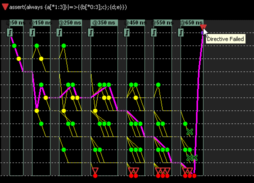
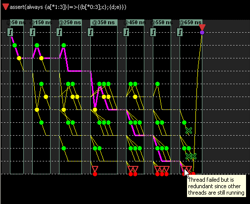

You can highlight
any thread in the Thread Viewer Pane to differentiate it from the
other threads by simply clicking on it with the left mouse button. Highlighting
appears as a bold purple line. Depending on where the thread is
clicked, any sub-threads that are forked and occur to the right
of the click-point will also be highlighted. Going left, parent
thread events which lead up to the current thread and selection
point will also be highlighted. Any parent thread forks, other than
the one which leads to the selected thread, will not be highlighted.
Highlighting for Root Thread Analysis
Highlighting
provides a quick visual aid to root thread analysis of assertion
failures. Red icons in the Thread Viewer Pane indicate failures. Clicking
any red icon, like the Directive Failed icon (solid red triangle)
in Figure 1, will highlight the path from the start
thread to the failed thread.
Figure 1. Root Thread Analysis of a Directive Failure
In Figure 2, a Thread Failed icon (hollow red triangle)
is clicked, showing the path from the start thread to the failure.
In this case, the thread failure is redundant because other threads
of the assert directive are still running.
Figure 2. Root Thread Analysis